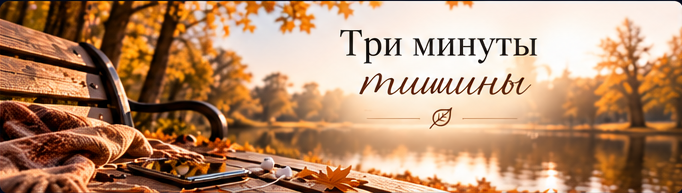

Хочется дать клиенту больше, чем час консультации?
Между встречами клиент остается один на один со своей жизнью. Иногда хочется дать ему что-то, что поможет не потерять то, к чему вы пришли на консультации: небольшое упражнение, дневник или памятку. Нейросеть поможет быстро подготовить основу такого материала, а вы адаптируете ее под конкретного клиента и свою работу.
Материалы для самостоятельной работы
Небольшие материалы, которые клиент может использовать самостоятельно в удобное для себя время.
Удобный формат для клиента
Нейросеть помогает подготовить дополнительные материалы, с которыми клиент может работать между консультациями. Это могут быть дневники, упражнения, рабочие листы или памятки.
Нажмите на изображение, чтобы увеличить
Мотивационные заставки на телефон
Нейросеть помогает создавать персональные заставки с поддерживающими фразами, подобранными под потребности конкретного клиента.
Нажмите на изображение, чтобы увеличить
Аудиопрактики для клиентов
Нейросеть помогает подготовить текст для аудиопрактики, которую психолог может адаптировать и записать своим голосом.

Больше возможностей для работы с клиентом
Экономия времени
Не нужно часами придумывать и оформлять материалы с нуля. Нейросеть поможет быстрее подготовить основу.
Экономия денег
Не обязательно нанимать дизайнера или других специалистов для создания красивых рабочих листов, памяток и заставок.
Индивидуальный подход
Можно создавать материалы под конкретного клиента, учитывая его запрос, особенности и то, над чем вы работаете на консультациях.
Непрерывность терапевтического процесса
Благодаря дополнительным материалам клиент может продолжать самостоятельную работу между консультациями, используя их как дополнительную опору в повседневной жизни.